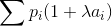
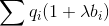

数据类型
1.（1） (1)a是int*类型，a[0]是int类型，b是double[][]类型，b[0]是double[]类型，b[0][0]是double类型
2.
(1)sa中元素个数=sizeof(sa)/sizeof(sa[0])
(2)sa[]中各个元素都是常量，分配在初始化区，而sb中各元素都是占据实际的变量空间，位于内存的用户栈区。
(3).分别为n*sizeof(char*),n*80*sizeof(char)=80*n.
其中sizeof(char*)和机器位数有关，如果是32位机，则sizeof(char*)=4，64位机则sizeof(char*)=8.
二、读程序写运行结果
Case #1: 1 4 2 3 5
Case #2: -5 88 11 20 2 -12 87
三、按要求写函数定义
设A和B是两个已有元素个数分别为n和m的按升序排序的整数数组，现在要合并A和B,并且合并后仍然按照升序排序。假设数组A中有足够的空间存放合并后的结果，要求在不使用临时缓冲区的情况下实现合并的功能。写出函数定义。
函数原型为：void Merge(int *A,int n,int *B,int m);
不使用临时缓冲区是指不可以用malloc()申请区域进行数据存取，可以定义指针。
void Merge(int *A,int n,int *B,int m)
{
//merging from tail will spend less times to move
int lenA=n,ptrA=n-1,ptrB=m-1,i;
while(ptrA>0 && ptrB >=0)
{
if(A[ptrA]>B[ptrB] && A[ptrA-1] < B[ptrB])
{
for(i=lenA-1;i>ptrA;i--)
{
A[i+1]=A[i];
lenA++;
}
A[ptrA]=B[ptrB]
}
ptrA--;
ptrB--;
}
// if A merged,while B still contained less elements
if(ptrB>=0)
{
for(i=lenA-1;i>=0;i--) //leave space for A[0...prtB]
A[i+ptrB]=A[i]
lenA+=ptrB;
for(i=-0;i < ptrB;i++)
A[i]=B[i];
}
}
四、定义一个函数删除一个单向链表的重复节点，不使用临时缓冲区
函数原型为 void Remove Duplicates(LINK *head);
自定义节点类型LINK,节点存放的是一个整型数据.
typedef struct LNode LINK;
struct LNode
{
int data;
LINK* Next;
};
void Remove Duplicates(LINK *head)
{
LINK *curr,*prev,*tmp;
curr=head;
while(curr)
{
tmp=curr->Next;
prev=curr;
whilie(tmp)
{
if(tmp->data == curr->data)
{
prev->Next=tmp->Next;
free(cmp);
tmp=prev;
}
tmp=tmp->Next;
}
curr=curr->Next;
}
}
五、文件中存放着N2*N2(3<N<6)大小的矩阵,矩阵元素均为[1,N2]的整数。请你写程序判断文件中保存的矩阵是否满足数独的要求
#include <stdio.h>
#define MAXN 6
#define MAXRANGE 36
int main(void)
{
FILE *fp;
int RANGE,ORDER;
int i,j,k1,k2;
int judgeFlag=1;
int sudoku[MAXRANGE][MAXRANGE];
char bucket[MAXN*MAXN];
fp=fopen("dataIN","r");
fscanf(fp,"%d",&ORDER);
RANGE=ORDER*ORDER;
for(i=0;i<RANGE;i++)
for(j=0;j<RANGE;j++)
fscanf(fp,"%d",&sudoku[i][j]);
for(i=0;judgeFlag==1 && i<RANGE;i++)
{
for(j=0;j<=RANGE;j++)
bucket[j]=0;
for(j=0;j<RANGE;j++)
bucket[sudoku[i][j]]+=1;
for(j=1;j<=RANGE;j++)
if(bucket[j]!=1){
judgeFlag=0;
break;
}
}
for(j=0;judgeFlag==1 && j<RANGE;j++)
{
for(i=0;i<RANGE+1;i++)
bucket[i]=0;
for(i=0;i<RANGE;i++)
bucket[sudoku[i][j]]+=1;
for(i=1;i<=RANGE;i++)
if(bucket[i]!=1){
judgeFlag=0;
break;
}
}
for(k1=0;judgeFlag==1 && k1<RANGE;k1+=ORDER)
{
for(k2=0;judgeFlag==1 && k2<RANGE;k2+=ORDER)
{
for(i=0;i<RANGE+1;i++)
bucket[i]=0;
for(i=0;i<ORDER;i++)
for(j=0;j<ORDER;j++)
bucket[sudoku[k1+i][k2+j]]++;
for(i=1;i<=RANGE;i++)
if(bucket[i]!=1)
{
judgeFlag=0;
break;
}
}
}
if(judgeFlag)
printf("Yes\n");
else
printf("No\n");
return 0;
}
六、顺序表原地逆置
void ReverseList(int *A,int n)
{
int i,tmp;
for(i=0;in/2;i++)
{
tmp=a[i];
a[i]=a[n-1-i];
a[n-1-i]=tmp;
}
}
时间复杂度为O(n)
七、有四个元素a,b,c,d依次入栈，入栈过程中允许出栈，请分析并写出所有可能的以a开头的出栈序列
a开头的出栈序列，等价于求b,c,d的所有可能的出栈序列再前缀a，也就是b,c,d可能的出栈序列共5种，从而可知答案为abcd,acbd,adcb,abdc,acdb
八、分别写出用冒泡排序和选择排序对序列[7,3,8,2,9]的每一趟过程
BubbleSort:
(7,3,8,2,9)
(3,7,2,8,9)
(3,2,7,8,9)
(2,3,7,8,9)
Selection Sort:
(7,3,8,2,9)
(2,3,8,7,9)
(2,3,7,8,9)
九、分析一个半带宽为2的带状矩阵（6阶方阵）的值为0的元素总个数
值为0的元素在右下与左上的三角形区域，每个区域有6个零元素，所有带状矩阵就有12个值为零的元素。
十、一个标准形式的二叉树转换为扩充二叉树
最好先声明一下扩充标准形的结点内容，再写函数
struct ExTNode
{
ExTree *Lchild,*RChild;
ExTree *parent;
int data;
};
typedef struct ExTNode ExTree;
ExTree* expand(BinTree T)
{
ExTree newTree;
newTree=(ExTree*)malloc(sizeof(ExTree));
newTree->parent=NULL;
newTree=->data=T->data;
if(T->Lchild)
{
newTree->LChild=expand(T->LChild);
newTree->LChild->parent=newtree;
}
if(T->Rchild)
{
newTree->RChild=expand(T->RChild);
newTree->RChild->parent=newtree;
}
return T;
}
十一、写出对一棵查找树（内部结点和外部结点的查找概率都已知）进行成功查找和不成功查找所需的平均比较次数，并对这两个比较次数作简要的解释。
写出等概率情况下最佳查找树的查找代价
(2)
pi是内部结点ai的查找概率，
qi是外部结点bi的查找概率。
查找成功的平均比较次数为

查找失败的平均比较次数为

这一段关于“最佳查找树”的内容在蔡子经《数据结构教程》中有体现
十二、设有向图G=(V,E)中的顶点表示通信结点，边表示通信链路，每条边(u,v)属于E均对应一个实数值r(u,v),0<=r(u,v)<=1,它表示从顶点u到顶点v的通信链路不中断的概率（即通信链路的可靠性），假设这些概率是相互独立的，试简单地写出求指定顶点对之间最可靠的可通路径算法的主要思路
要求指定两点间通信链路不中断的概率，即每条边的概率之乘积。要应用Dijkstra或Folyd算法，可以对概率值取对数，这样就将各边的权值(概率)的乘积转化为了权的对数之和，就可以应用求最“长”路径的算法求出最可靠的通路。
但注意概率取值为[0,1],直接取对数作为权值，数值上都为不大于0的数值，此时Dijkstra算法失效.
所以转化时若取负对数的变换-log(r),则可以保证图的边权不小于0，这样可以应用求最短路径的算法计算。设求得的最短路径长度为 ans, 则该路径不中断的概率为 e-ans